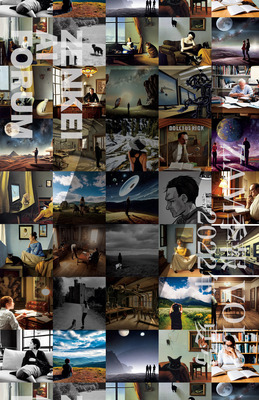

ZAF 2022 年 9 月 28 日
＜本日のテーマ＞
技術書典１３お疲れ様でした！
『ZAM 季報 VOL.2』振り返り
目次
- [6:30 - 7:00] 前座 日常への回帰
- [7:00 - 8:00] パート１ (Stable) Diffusion 完璧に理解するぞ！
- [8:00 - 9:00] パート２ 技術書典１３ お疲れさま 座談会
- 今日のおわりに
- 総合目次
（前座）
日常への回帰
日常への回帰
- ６月下旬から、
７月、８月、９月と、
超多忙な日々を潜り抜け、
やっとぼくの生活に日常が戻ってきました - 先月の ZAF-2208 の前座もそのはなしをしましたね


- ついくさ (twekusa.com)
というものに、先日登録（？）したんですが

（７月は中旬まではツイートしてたみたいだけど）
８月は本当に１つもツイートできてない……
- その辺のはなしを、前座でしゃべります


ZAP (ZENKEI AI ポッドキャスト) 復活しました！
- お待たせしました！
- （１シーズンごとにまとめて仕込んでいるとはいえ）
８月３日（水）以来、更新できてませんでした

- 新シーズン２４、スタートしました！

- シーズン２４は、 ZAF-2112 （２０２１年１２月２２日）の内容です！
- （2022年9月21日公開）S24E01 （前座）今月のポッドキャストと技術書典１２
- （2022年9月28日公開）S24E02 第１部 2021年の振り返り
- （2022年10月05日公開予定）S24E03 浮世絵チャレンジ 俳句TO浮世絵プログラム PoemGANの紹介 （大島圭祐さん）
- （2022年10月12日公開予定）S24E04 大島とPoemGANと私 （ホンダナオさん）


（ぼくの趣味１００％の）
音楽と数理 🎼 ♾ ポッドキャスト
復活しました！

- お待たせしました！
- こちらは（１エピソードごとに作ってリリースしてるので）
前回のエピソードが７月２４日でしたね
- ９月の多忙の「技術書典１３」が一息ついた９月２３日（金）に収録、
編集して９月２５日（日）にリリース
- 収録は１時間を超えていて、編集後も５１分と長かったのですが、
どうしても「技術書典１３」の閉会前にリリースしておきたかったので、
分割せずに１本として公開しました。 - 久しぶりの収録で、この間いろいろとあったので、話があっちこっちに飛びまくってます
- 主観的に丁寧に生きること
- ６月末から８月下旬まで忙しかったこと（仕事、2D から 3D）
- ゼロから１にすることが好き
- 創造性を損なわないツール、スキル
- ファインマインのパワーは試行錯誤の回数
- Blender やっとマスターしてきた、Blender すごい
- ９月も忙しかったのは「技術書典１３」、新刊でました！
- 『ZAM 季報 VOL.2』出さなければならなかった２つの理由
- 技術書典のおどろくべき「後から印刷」と「キャッシュバック」
- 松尾芭蕉と同人について
- 『正法眼蔵』読んでます。「春秋」
- 『竜とそばかすの姫』見た
- 手を抜けないこと、園芸とぬか床
- YouTube もあります(https://youtu.be/ZaEcO2z_5l8)。よろしければ聞いてみてください。


日常への回帰
まだ戻ってきてないものなど
- 『ZAM 季報 VOL.2』の中でも書いていますが
実際のところ
その後の 7 月と 8 月は仕事が忙しくて、- ZAP を配信しつつ、
- 個人的なポッドキャストも配信しつつ、
- Twitch でピアノの練習も配信する
まだ平常モードに戻れていません。 - ここで「Twitch」というよりも
「ピアノ」を復活させたい- が、こういう肉体のトレーニング系のプロジェクトって
中断すると、いろいろと戻していくこと自体が大変なんですよね……
- が、こういう肉体のトレーニング系のプロジェクトって
一歩ずつ、がんばろう！
継続は力なり
継続は力なり
（と、継続が滞るたびに心に誓う）
前座
One More Thing
（コロナ禍のもと）
自分が大切だと思うこところの
経済を回すこと
（コロナ禍のもと）
自分が大切だと思うこところの
経済を回すこと
- 『技術書典』が終わったタイミングで思ったこと
- ぼくの個人的な「大事なもの」として、
- （技術）同人誌活動に入ってみて、一番、感動したのは、
（IT 屋さんのお題目としてではなく）DTP （デスクトップパブリッシング）が根付いているな
- 個人一人一人を、技術がエンパワーする、ということ
- それを支えている「リアル」の重要な構成要素に、
個人を対象にした、小部数からでも対応する印刷屋さんの存在
- 「技術書典」の運営の人たちがあれこれ考えていることの一部分も同じ気持ちだと思う
- 「紙の本」推し

- 「後から印刷」企画、
「80% キャッシュバック」キャンペーン


- 「紙の本」推し
- 先日この「後から印刷」への入稿データに問題があって、
日光企画
さんから電話がきた

- 日光企画さんといえば、個人的には
既刊『音楽と数理』『厳密な計算』の印刷をお願いしたところ
- それから、
- 幸せの黄色い『音楽と数理』ミニハンカチ、とは
(https://twitter.com/ichiki_k/status/1353161879766536192)
- 技術書典の印刷版（紙の本）は送料無料だけど、
BOOTH では送料（あんしんBOOTHパック、ネコポス） 370 円かかるので、
おまけとして付けていた

- 技術書典の印刷版（紙の本）は送料無料だけど、
- 日光企画さんといえば、個人的には
- そうこうしてたら、こんなツイートが
(https://twitter.com/nikko_boss/status/1574276283999010816)
 なにかせねばっ！
なにかせねばっ！- 「後から印刷」は、今回
『ZAM 季報 VOL.2』の紙の注文が７冊だったところ、
個人的に配る用と、あとで BOOTH で頒布する用など見込んで、元気よく- （もちろん、キャッシュバックは このうち７冊分しかないことは承知の上で）
- そういえば、先述のおまけ「幸せの黄色い『音楽と数理』ミニタオル」 の在庫が切れかけてたことを思い出した（残り２枚）
- 「後から印刷」は、今回
『ZAM 季報 VOL.2』の紙の注文が７冊だったところ、
- ということで
幸せの黄色い『音楽と数理』ミニハンカチ
ほか、新しいグッズも含め
発注しよう！企画 - 同人工房Web


- さて、なにを作ろう？とちょっと考えて、以下の４点を作ることにしました
- （１）幸せの黄色い『音楽と数理』ミニタオル
- （２）通常の３倍のスピードできれいになる！ 真紅の『厳密な計算』メガネ拭き
- （３） Stable Diffusion のコラージュ 『ZAM 季報 VOL.2』クリアファイル (A5)
- （４）名刺代わりになるかな？ 『数理三部作＋α』和紙ファイル（試作）
- さて、なにを作ろう？とちょっと考えて、以下の４点を作ることにしました
- 原稿をチラ見せ！
- 在庫補充
- 新グッズ、その１
真紅の『厳密な計算』メガネ拭き - 新グッズ、その２
『ZAM 季報 VOL.2』クリアファイル (A5) - 新グッズ、その３
『数理三部作＋α』和紙ファイル（試作）
- 在庫補充
- 基本的に、これらのグッズは BOOTH で紙の本を買ってくれた人の 「おまけ」としてプレゼントする予定です


（目次に戻る）
パート１
(Stable) Diffusion
完璧に理解するぞ！
連ツイ「技術書典 Stable Diffusion 本を読む」
- 技術書典１３の RTA (real time attach) も無事に終わって、
時間ができたので、技術書典に出てる本の中から Stable Diffusion に関する本を
（いくつかは購入して）眺めてみた - 連ツイ「技術書典 Stable Diffusion 本を読む」シリーズ
(https://twitter.com/ichiki_k/status/1571332528656748545)


- 技術書典ほかで『機械学習の炊いたん。』で有名な tomo-makes さんのレビュー
(https://twitter.com/tomo_makes/status/1573966109946290176)


原典にあたれ --- 完璧に理解すべきだなと認識
- ちょうど最近、以下のようなツイート
(https://twitter.com/mi141/status/1569879255429054464)
が流れてきた
ほぼ同じタイミングで拡散モデルのサーベイが２本公開されてます https://arxiv.org/abs/2209.04747 https://arxiv.org/abs/2209.00796 １本目は画像に特化して事例をたくさん知りたい場合、２本目は拡散モデルを基礎から幅広く把握したい場合にオススメ！ 特に後者の最後、他の生成モデルとの関連はとても面白いです。

- https://arxiv.org/abs/2209.04747
(local copy)
Diffusion Models in Vision: A Survey Florinel-Alin Croitoru, Vlad Hondru, Radu Tudor Ionescu, Mubarak Shah


- https://arxiv.org/abs/2209.00796
(local copy)
Diffusion Models: A Comprehensive Survey of Methods and Applications Ling Yang, Zhilong Zhang, Shenda Hong, Runsheng Xu, Yue Zhao, Yingxia Shao, Wentao Zhang, Ming-Hsuan Yang, Bin Cui


- https://arxiv.org/abs/2209.04747
(local copy)
- 少し乗り遅れたが、時間を作って、この辺を手掛かりにして
(Stable) Diffusion を
完璧に理解するぞ！
- まずこの２本のレビューに目を通す
- 同じようなまとめだった
- 現状、 Diffusion Models は３つのカテゴリに分類される
- denoising diffusion probabilistic models (DDPMs)
- noise conditioned score networks (NCSNs)
- stochastic differential equations (SDEs)
- これらと、他の画像生成系のアプローチも整理されつつある
- variational auto-encoders (VAEs)
- generative adversarial networks (GANs)
- energy-based models (EBMs)
- autoregressive models
- normalizing flows
- レビューから、キーとなる論文をピックアップ
- Latent Diffusion Model (LDM)
- https://arxiv.org/abs/2112.10752 (local copy)
High-Resolution Image Synthesis with Latent Diffusion Models Rombach et al.


- https://arxiv.org/abs/2112.10752 (local copy)
- denoising diffusion probabilistic models (DDPMs)
- https://arxiv.org/abs/1503.03585 (local copy)
Deep Unsupervised Learning using Nonequilibrium Thermodynamics Jascha Sohl-Dickstein et al


- https://arxiv.org/abs/2006.11239 (local copy)
Denoising Diffusion Probabilistic Models Jonathan Ho et al.


- https://arxiv.org/abs/1503.03585 (local copy)
- noise conditioned score networks (NCSNs)
- https://arxiv.org/abs/1907.05600 (local copy)
Generative Modeling by Estimating Gradients of the Data Distribution Yang Song, Stefano Ermon


- https://arxiv.org/abs/1907.05600 (local copy)
- stochastic differential equations (SDEs)
- https://arxiv.org/abs/2011.13456 (local copy)
Score-Based Generative Modeling through Stochastic Differential Equations Yang Song et al.


- https://arxiv.org/abs/2106.02808 (local copy)
A Variational Perspective on Diffusion-Based Generative Models and Score Matching Chin-Wei Huang et al.


- published link: https://papers.nips.cc/paper/2021/hash/c11abfd29e4d9b4d4b566b01114d8486-Abstract.html
- https://yang-song.net/

-
Generative Modeling by Estimating Gradients of the Data Distribution
This blog post focuses on a promising new direction for generative modeling. Yang Song Stanford University PUBLISHED May 5, 2021

-
Generative Modeling by Estimating Gradients of the Data Distribution
- https://arxiv.org/abs/2011.13456 (local copy)
- Latent Diffusion Model (LDM)


次回（？）予告
- 今日はここまで。
次回（？）予告
(Stable) Diffusion
完璧に理解するぞ！
（目次に戻る）
パート２
技術書典１３ お疲れさま 座談会
技術書典１３ お疲れさま 座談会
『ZAM 季報 VOL.2』完成しました！
- 総ページ数（本文）１２８の大作になりました（なってしまいました）
- 記事の数は１５本。内訳は、
- 【講演】３本
- 【連載】２本
- 【AI実践編】３本
- 【エッセイ】６本
- 【AI小説】１本
- 記事の数は１５本。内訳は、
- 表紙
- 目次
- まえがき
- 【連載】ZENKEI AI FORUM 年代記（２）（市來健吾）

- 【講演】浮世絵チャレンジ 俳句TO浮世絵プログラムPoemGANの紹介（大島圭祐）

- 【エッセイ】ZENKEI AI MAGAZINEに寄稿すべし！（河村千種）

- 【AI実践編】アニメ顔になってみよう！---最近の GAN（市來健吾）

- 【エッセイ】締め切りに関する考察（山本浩貴）

- 【講演】メラノーマ疑惑のホクロをAIで診断してみた（ちゃんもり）

- 【連載】日常で使えない英語トリビアⅡ～略語編（河村千種）

- 【エッセイ】共通テストってどれほどのものよ？（市來健吾）

- 【エッセイ】執筆が先か、学びが先か（窪田智紗季）

- 【AI小説】アンドロメダの女（野木恵吉）

- 【エッセイ】コミュニティ志向と科学的視点（市來健吾）

- 【AI実践編】Let's Dance!（市來健吾）

- 【講演】Stable Diffusion 革命（市來健吾）

- 【AI実践編】2022年9月上旬版 Stable Diffusion の使い方（市來健吾）

- 【エッセイ】最近のオレはどこに向かっているんだろう？（市來健吾）

- 執筆者紹介

- 編集後記


技術書典１３ドタバタ出典記（オンライン）〜約２週間でサークル雑誌『ZAM 季報 VOL.2』を書いたはなし
フィードバックなど
- 技術書典ほかで『機械学習の炊いたん。』で有名な tomo-makes さんからのコメント
(https://twitter.com/tomo_makes/status/1573995432983699456)

#技術書典 @ichiki_k さん単著から拝読しています。 #stablediffusion 記事目当てに手に取るも、その完成度は勿論、 各記事一貫した実践姿勢、コミュニティの在り方への思索など、 同じ合同本を作る立場で引き込まれました。 旅先のカフェで手に取るミニコミ誌のような読後感。

売り上げ報告
- 毎回恒例の売り上げ報告です
凡例- ■：ゼロから始めるAI
- ■：音楽と数理
- ■：Jupyter BookでAIの解説本を書く方法
- ■：厳密な計算
- ■：ZAM 季報 VOL.1
- ■：ZAM 季報 VOL.2
- 技術書典９からの時系列

- 「ゼロはじ」は （無料であることも大きいですが）ダントツですね。
- 前回の技術書典１２終了時点で総頒布数（ダウンロード数）が 1,000 を超えました
- 縦軸をズームイン

- 有料の本については「音楽と数理」 が一番出ています
- こちらも、累計 200 部を超えました。
- 世界の 200 人の人に（ぼくのニッチなこの本が）届いたのかと思うと、 嬉しいです
- さらに縦軸をズームイン

- 技術書典１０で刊行した２冊
- 中野さんの「Jupyter Book」本と
- ぼくの「厳密な計算」
- サークル雑誌（同人誌の世界では「合同誌」と呼ぶらしいですね）の２冊、
「ZAM 季報」の VOL.1 と VOL.2 ですが、 （相対的に？）注目度が低いのかな？と思いました - 今回がんばった新刊の VOL.2 は 13 部出ました
- 技術書典１０で刊行した２冊
- イベントごとにまとめた頒布数の推移

- 縦軸をズームイン

- ぼくの２冊「音楽と数理」
と「厳密な計算」
の推移を見ると、
新刊の時のピークから２回目で減衰するけど、
３回目以降はもうサチってる感じなのかな？
つまり- 「音楽と数理」 は１５冊
- 「厳密な計算」 は５冊
- ぼくの２冊「音楽と数理」
と「厳密な計算」
の推移を見ると、
- ちなみに「技術書典１４」は半年後の 2023 年春ごろだそうです
- （フムフム、まだ時間はいっぱいあるなぁ……）


{kind=link}
{kind=link}
{kind=link}
{kind=link}
{kind=link}
{kind=link}
{kind=link}
{kind=link}
{kind=link}
{kind=link}
{kind=link}
{kind=link}
次（技術書典１４）こそは
数理三部作の新刊出すぞ！
数理三部作の新刊出すぞ！
Let's 座談会！
- みんな、来てくれるかなぁ
今日のおわりに
……
今後の予定
- 次回 ZAF は 2022 年 10 月 26 日開催の予定です。
- ZAF 講演者、 ZAM 執筆者、絶賛、大募集中です！
お気軽にお問い合わせください！
総合目次
- 前座 日常への回帰
- ZAP (ZENKEI AI ポッドキャスト) 復活しました！
- （ぼくの趣味１００％の）音楽と数理 🎼 ♾ ポッドキャスト復活しました！
- 日常への回帰〜まだ戻ってきてないものなど
- （コロナ禍のもと）自分が大切だと思うこところの経済を回すこと
- 第１部 (Stable) Diffusion 完璧に理解するぞ！
- 第２部 技術書典１３ お疲れさま 座談会
- 今日のおわりに